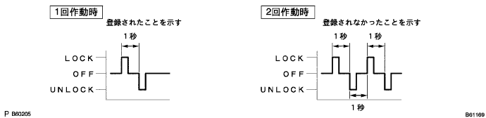

Make the vehicle in the following state.
The driver's door glass is fully opened.
Open only the driver's seat door.
Make the driver's seat door in Unlock.
The key plate is not inserted into the ignition switch rock cylinder.
After the above work, perform the following work.
Repeat the work of inserting the key plate into the ignition switch rock cylinder and pulling it out twice.
- ■ Attention ■
- Do it within 5 seconds.
The driver's seat door is fully closed → After opening twice, the key plate is inserted into the ignition switch rock cylinder and extracted.
- ■ Attention ■
- Do it within 40 seconds.
The driver's seat door is fully closed → Open twice, the key plate is inserted into the ignition switch rock cylinder, and all the doors are closed.
- ■ Attention ■
- Do it within 40 seconds.
ON ← → Lock of the ignition switch is performed about 1 second for each mode shown in the figure below, and the key plate is extracted after selecting the mode.
- ■ Attention ■
- Do it within 40 seconds.
After 3 seconds, the door control relay automatically performs the door lock lock ← → Unlock, and informs the worker in each response pattern as shown in the figure below.
- □ Participation □
- If you select a confirmation mode and prohibited mode, it will end after the response.
- The confirmation mode shows an example in which two types of identification code is registered in the figure because the number of cycles is activated as the registered code number.However, if the number of registration code is 0, execute 11 cycles.
- If the Ignition Switch is ON ← → Lock 4 or 6 or more times, it will end with no response.


Registering the door control transmitter, electrical key transmitter
When selecting an additional mode and rewriting mode, press the door control transmitter, the lock switch and unlock switch of the electrical key transformer, and then press the switch control transmitter and electrical key transmitter again.
- ■ Attention ■
- Press more than 1 second per switch operation.
- Submit the key to the door control transmitter and the electrical key transmitter within 45 seconds within 45 seconds.
After the switch of the door control transmitter and electrical key transmitter is turned off, Lock ← → Unlock operation is automatically performed within 5 seconds if the registration of the door control train transmitter and electrical key transformer is completed.If the registration has not been completed twice, registration of the door control transmitter and the electrical key transmitter will be re -registered.
- ■ Attention ■
- After the ignition switch is turned off, Lock ← → Until the operation is automatically performed, the door control transmitter and the electrical key transmitter are not operated.However, if Lock ← → Unlock is not operated after 5 seconds, registration of the door control transmitter and electrical key transmitter will be performed again.
If you continue to register, register the door control transmitter and electrical key transmitter within 45 seconds.
- □ Participation □
- Up to 4 types of identification code can be registered.
End of registration mode (when one is established)
Waiting for registration mode input has passed 45 seconds or more.
Open any door.
Insert the key into the ignition switch rock cylinder.
After the registration work, perform the following work.
Wireless Arrock Control System (Car with Smart Door Lock) Car Inspection
Smart door lock system inspection
- ■ Attention ■
- If you do not operate wireless or smart or do not operate only smart, registration of the identification code again.